Gastronomía
Taberna de Moe
Puede pasar por la taberna a tomar una cerveza, o el famoso trago "Llamarada Moe" junto a sus amigos de jueves a martes. Ubicada cerca del centro de la ciudad, al lado de la Primera Igleseia de Springfield.
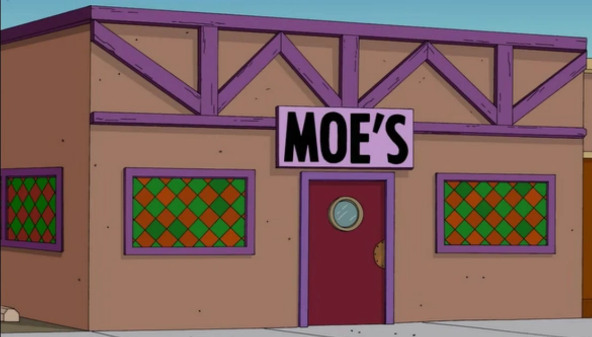
Dato curioso: A pesar de haber iniciado como una taberna, como es también a día de hoy, el lugar fue cambiando de rubro múltiples veces, como por ejemplo un restaurante de sushi, o un restaurante familiar
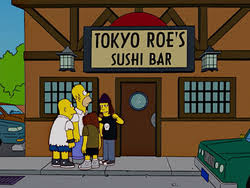
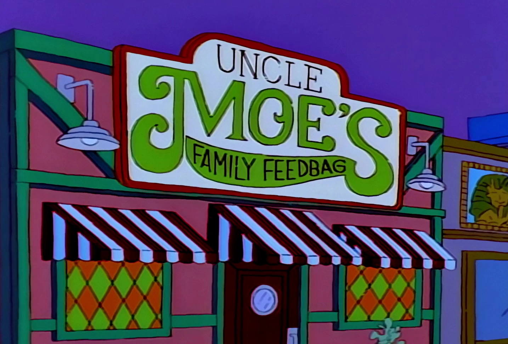
Krusty Burger
Si son amantes de las hamburguesas pueden visitar la cadena de comida rápida más famosa de la ciudad, para probar el famoso combo "Krusty meal", o si está disponible, el tan ansiado por todos los ciudadanos de la ciudad y alrededores, "Ribwich"
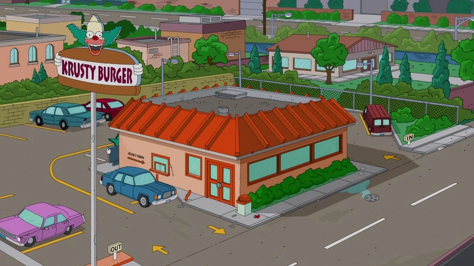
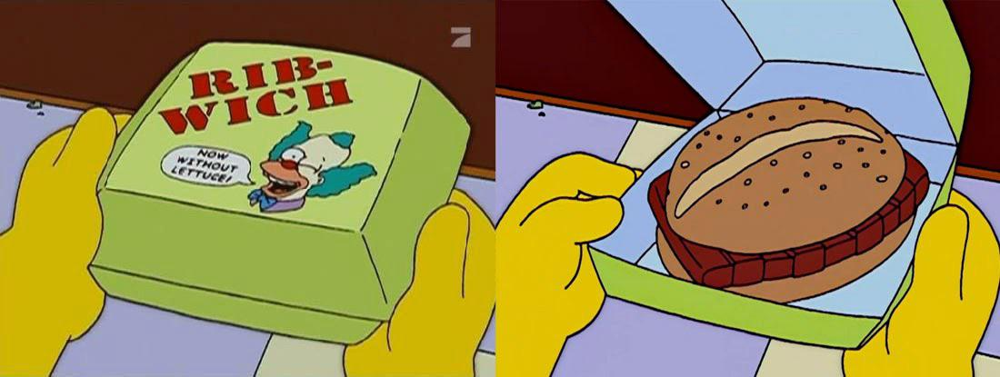
Holandes Cocinante
Para los amantes de los mariscos pueden visitar el buffet del Capitán McCallister, con una amplia variedad de platos para todos los gustos.

Dato curioso: El restaurante tenía una política de "Todo lo que pueda comer", hasta que el ciudadano Homero Simpson casi arruina el local.
Cultura y entretenimiento
Primera Iglesia de Springfield
Puede escuchar la palabra del Señor todos los domingos como la mayoría de ciudadanos en este lugar. Ubicada cerca del centro, es dirigida por el Reverendo Alegría.
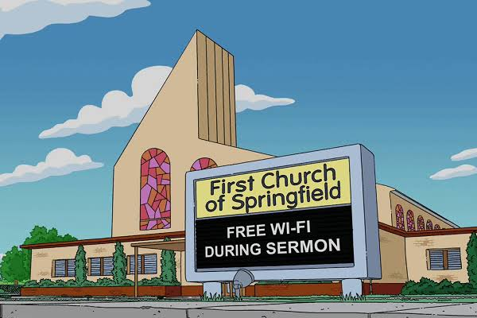
Dato curioso: La iglesia estuvo 2 veces bajo el control del dueño de la planta nuclear de Springfield, Charles Montgomery Burns. La primera debido a que 2 ciudadanos (Homero y Bart Simpson) destruyeron la iglesia y el señor Burns se ofreció a repararla, debido a que el consejo de la iglesia no podía. La segunda también fue debido a falta de dinero y el señor Burns patrocinó la iglesia.
Acá se puede ver una "godcam" agregada luego de una de estas situaciones.
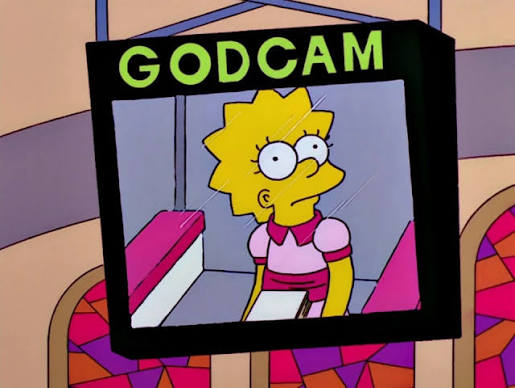
La mazmorra del androide
Para los frikis y amantes de los coleccionables pueden visitar la tienda de Jeff Albertson, Mazmorra del Androide, donde podrán encontrar una amplia varidedad de cómics y figuras, entre otras cosas.
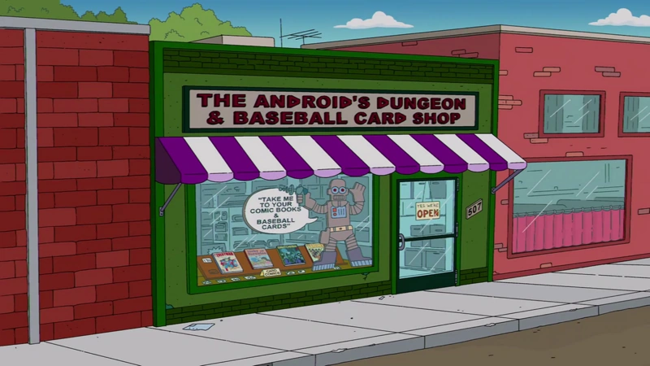
Estudios Krustylu
Puede visitar el estudio donde se graban los programas de Krusty el payaso, para presenciarlos en vivo y probablemente aparecer en televisión usted mismo. Con la oportunidad de conocer a Krusty, así como a Tomy y Daly, personajes de otro famoso programa de la ciudad.
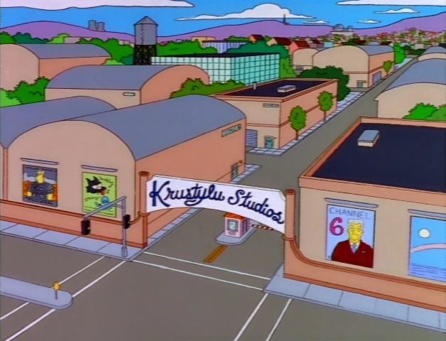
Central nuclear
La famosa central nuclear de Springfield, ubicada al oeste de la ciudad, construída y fundada a mediadios del siglo XX.
Es el lugar dónde se genera toda la energía eléctrica de la ciudad.
Puede visitar este enigmático lugar para conocer cómo es que se trabaja acá, conocer a sus empleados y el por qué se generan los fenómenos como
las lluvias ácidas y peligros nucleares constantes que azotan a la ciudad.
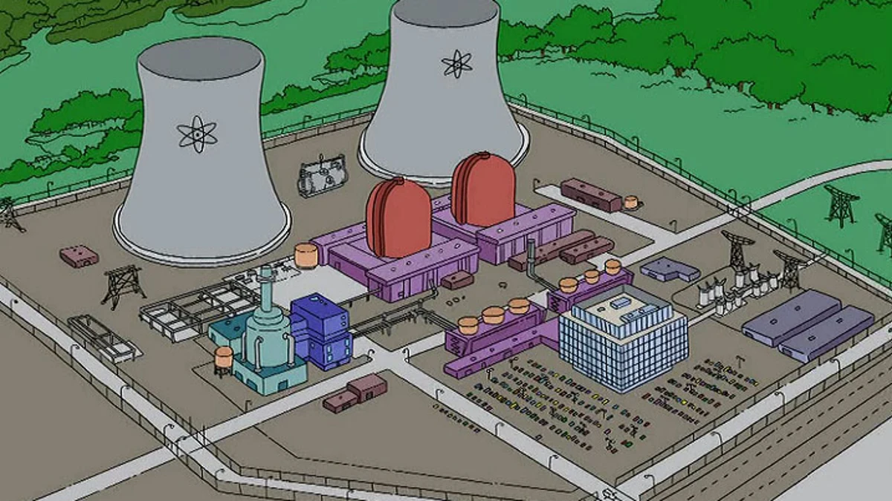
Dato curioso: Dentro de la planta se pueden observar animales curiosos, como ratas luminiscentes y peces de 3 ojos
Vertedero de neumáticos
Un terreno donde se desechan neumáticos que luego se incendian. El fuego se volvió más popular con el paso de los años, ya que lleva en llamas por décadas, convirtiendo este terreno en una especie de punto de referencia de la ciudad.
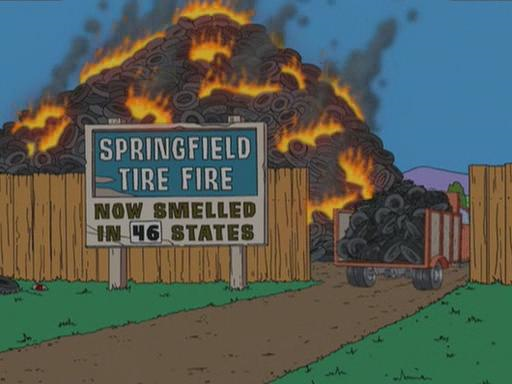
Dato curioso: El olor de los neumáticos incendiados se puede percibir en 46 estados.